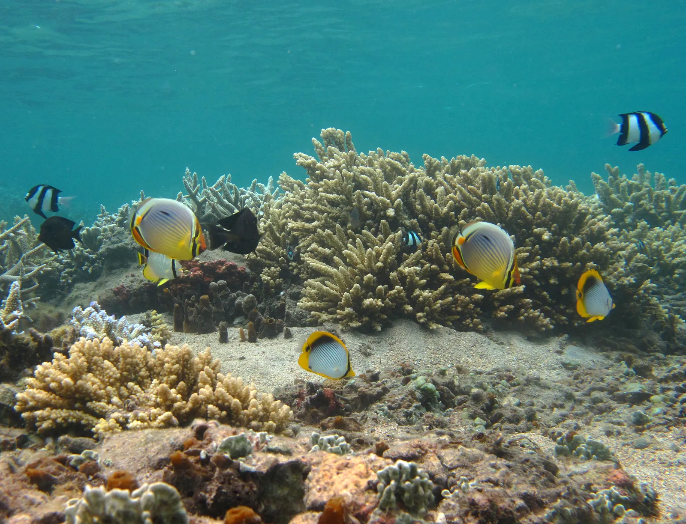

Lagon de l’Ermitage
La Réunion, France · snorkeling, baignade

Plus grand lagon de La Réunion, protégé par la barrière de corail et bordé de filaos. Une eau calme idéale en famille.
- Lieu
- La Réunion, France
- Niveau
- Débutant
- Activités
- snorkeling, baignade
- Type d'eau
- Mer / océan
- Coordonnées
- -21.08, 55.22 (position approximative du secteur)
Dangers à connaître
- Vagues et courant près de la barrière de corail et des passes (Hermitage et Trois-Bassins notamment) : reste dans le lagon.
- Corail fragile : ne marche pas dessus.
Le conseil d'Ocean Buddy
Reste dans le lagon et ne t’approche pas de la barrière de corail ni de la passe de l’Hermitage : il y a des vagues et du courant. Ne touche pas le fond ni le corail, et consulte la réglementation par zone dans l’application de la réserve marine.
Ouvrir dans Ocean Buddy Télécharger sur l'App Store
Source : Fiche Ocean Buddy · septembre 2026 · à vérifier localement.